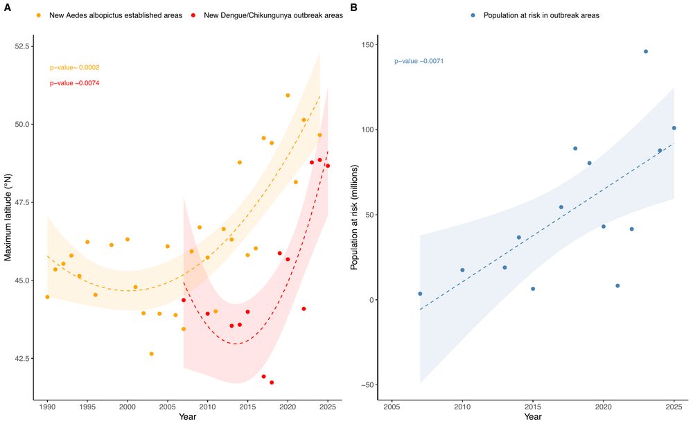
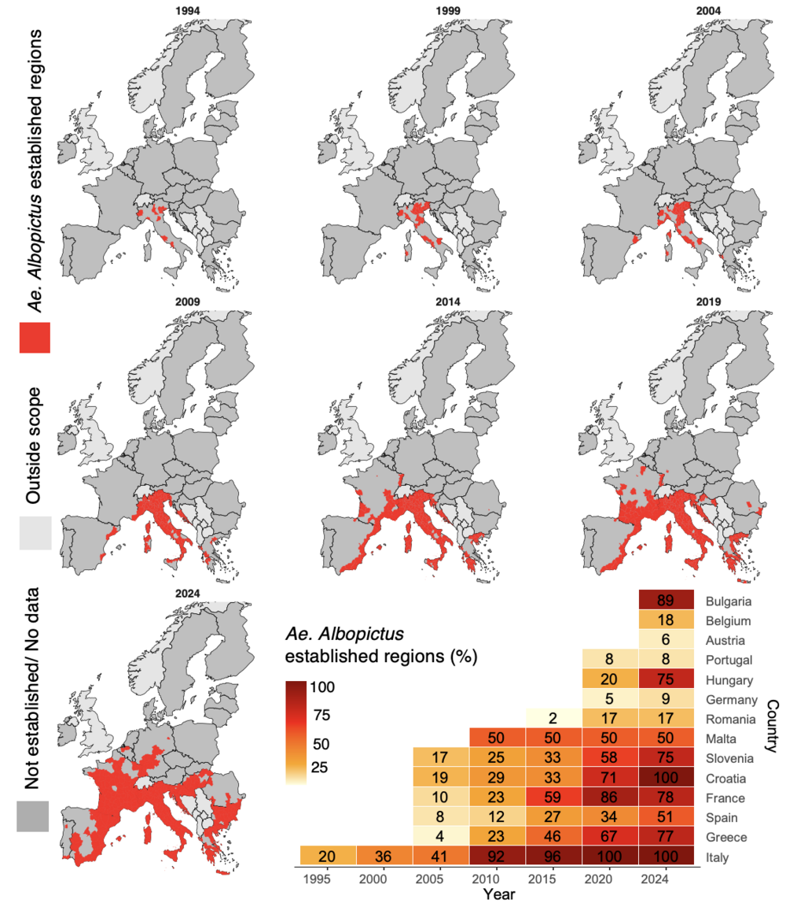
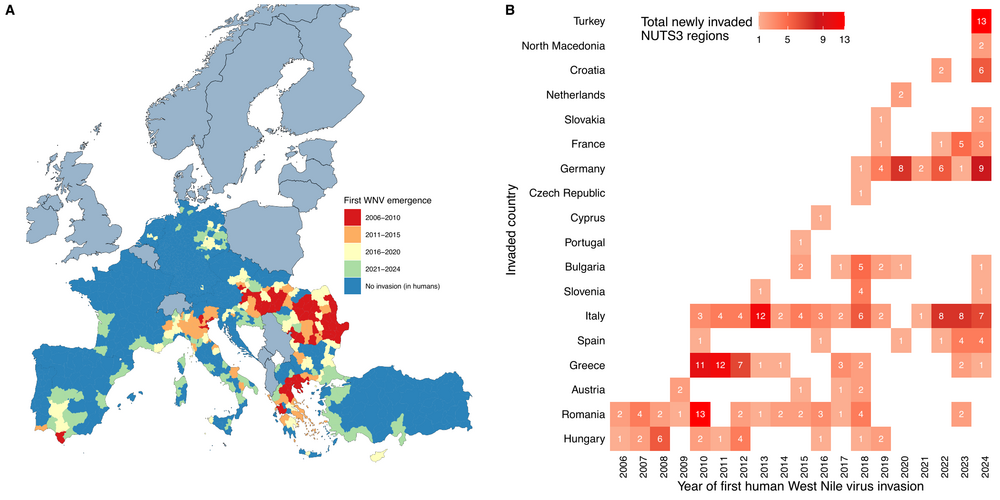
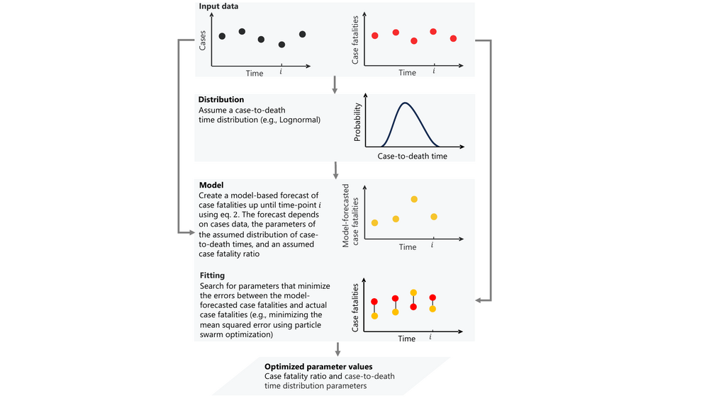
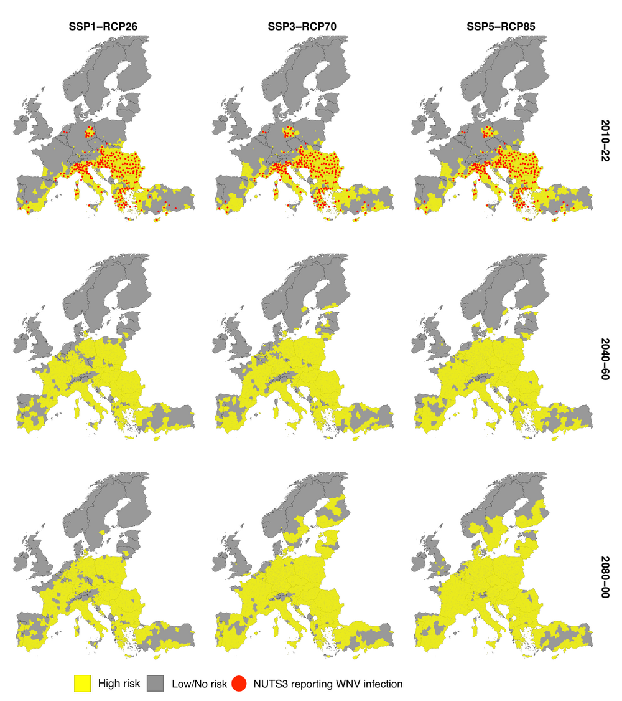
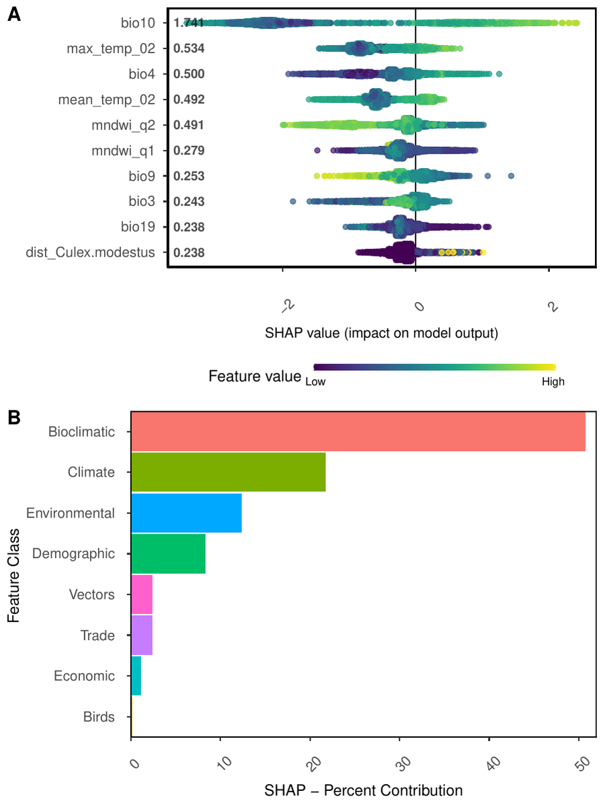

Words that inspire me
Somewhere, something incredible is waiting to be known.
If I have seen further it is by standing on the shoulders of giants.
The important thing is not to stop questioning. Curiosity has its own reason for existing.
Welcome
I am a postdoctoral researcher at Umeå University, Sweden, working where data science, machine learning, and infectious-disease epidemiology meet. I build spatio-temporal and mechanistic models that forecast the outbreak and expansion risk of climate-sensitive diseases — West Nile virus, dengue, and chikungunya — from the interplay of climatic, ecological, socioeconomic, and human-mobility drivers.
I develop the European West Nile virus risk indicator for the Lancet Countdown in Europe and contribute to the EU-funded IDAlert project, pairing explainable AI with mechanistic modelling to turn complex data into evidence for climate-resilient public health.
At a glance
2,146Citations (Google Scholar)
11h-index
12i10-index
18Publications
9First-author papers
4Grants & awards secured
Featured research

The Lancet Planetary Health · 2025
Northward expansion of Aedes albopictus-associated arbovirus transmission risk in Europe
Read the paper →

The Lancet Planetary Health · 2025
Impact of climate and Aedes albopictus establishment on dengue and chikungunya outbreaks in Europe
Read the paper →

Preprint · 2026
Spatial diffusion and climatic suitability shape West Nile virus invasion risk across Europe
Read the preprint →

Scientific Reports · 2025
Improving case fatality ratio estimates in ongoing pandemics through case-to-death time distribution analysis
Read the paper →

One Health · 2023
European projections of West Nile virus transmission under climate change scenarios
Read the paper →

The Lancet Regional Health – Europe · 2022
Artificial intelligence to predict West Nile virus outbreaks with eco-climatic drivers
Read the paper →
Published in
The Lancet Planetary Health (2)
The Lancet Public Health (3)
The Lancet Regional Health – Europe (3)
Scientific Reports (1)
One Health (1)
International Journal of Epidemiology (1)
Eurosurveillance (1)
European Control Conference (IEEE) (1)
Journal of Space Technology (1)
Funding & awards secured
Kempe Foundation Postdoctoral Scholarship
Two-year competitive fellowship · 2026–2028
MIRAI Japan–Sweden Mobility Grant
Long-term mobility grant for Early-Career Researchers · SEK 130,000
Medical Faculty Internationalization Grant
Umeå University · SEK 28,500
Research Visit Travel Grant
Awarded during PhD · SEK 18,500
Applications under review
FORMAS Early-Career Researcher grant
Submitted 2026 · decision expected Oct 2026
FORMAS Climate & Health call (Sweden)
Application submitted · under review
Horizon Europe
Application submitted · under review
FORTE — abortion research project
Under review · decision expected Oct–Nov 2026
Recent highlights
2026Preparing a first-author study on human mobility and the transcontinental threat of dengue (to be submitted).
2026Released a preprint introducing a spatial-diffusion model of West Nile virus invasion across Europe.
2026Contributing author to the 2026 Europe report of the Lancet Countdown (The Lancet Public Health).
2025Published two first-author papers in The Lancet Planetary Health on the expansion of Aedes albopictus and arboviral outbreaks in Europe.
2025Research visit to the Applied Ecology Unit, Fondazione Edmund Mach, Trento, Italy.
2025Awarded the MIRAI Japan–Sweden long-term mobility grant for early-career researchers.
2024Completed PhD in Epidemiology and Public Health at Umeå University.
Research focus
- Predictive modelling of vector-borne diseases — machine learning, explainable AI, and mechanistic models forecasting outbreak and expansion risk for West Nile virus, dengue, and chikungunya.
- Climate change and disease ecology — attributing the roles of climate, environment, and human mobility in the emergence and northward spread of arboviruses across Europe.
- Spatial epidemiology — disease risk mapping, ecological niche and species-distribution modelling, and spatial-diffusion frameworks for disease invasion.
- Biostatistics & methods — survival and time-to-event analysis, case-fatality and disease-severity estimation, and reproducible, data-driven workflows.
- Indicators for policy — European early-warning indicators for the Lancet Countdown and decision-support tools for climate-resilient health systems.